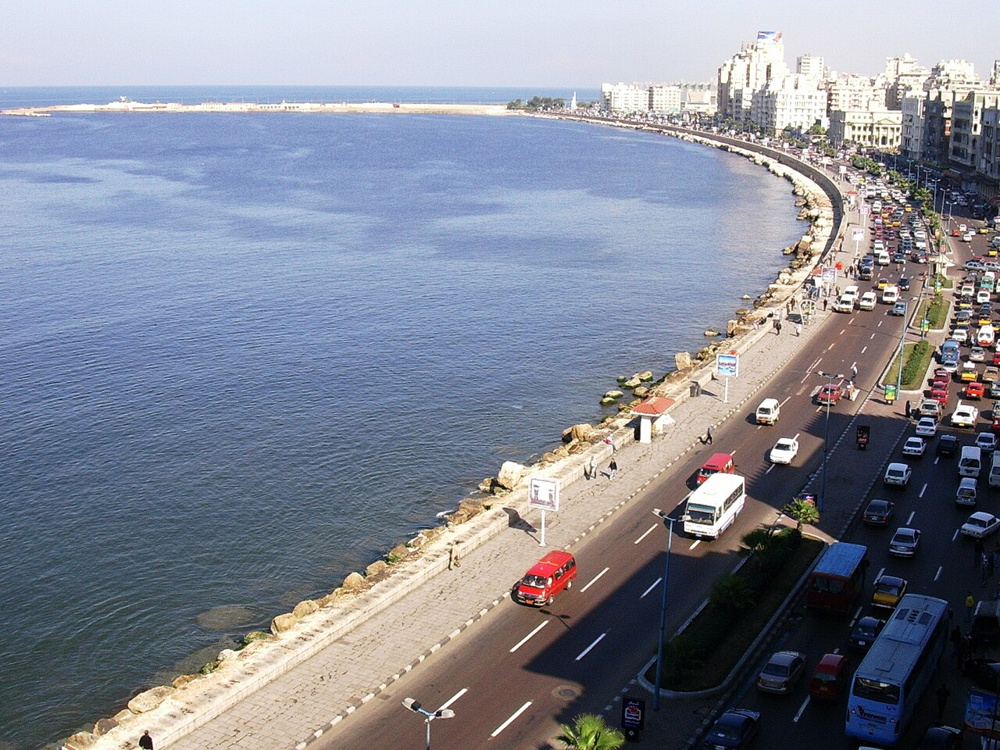
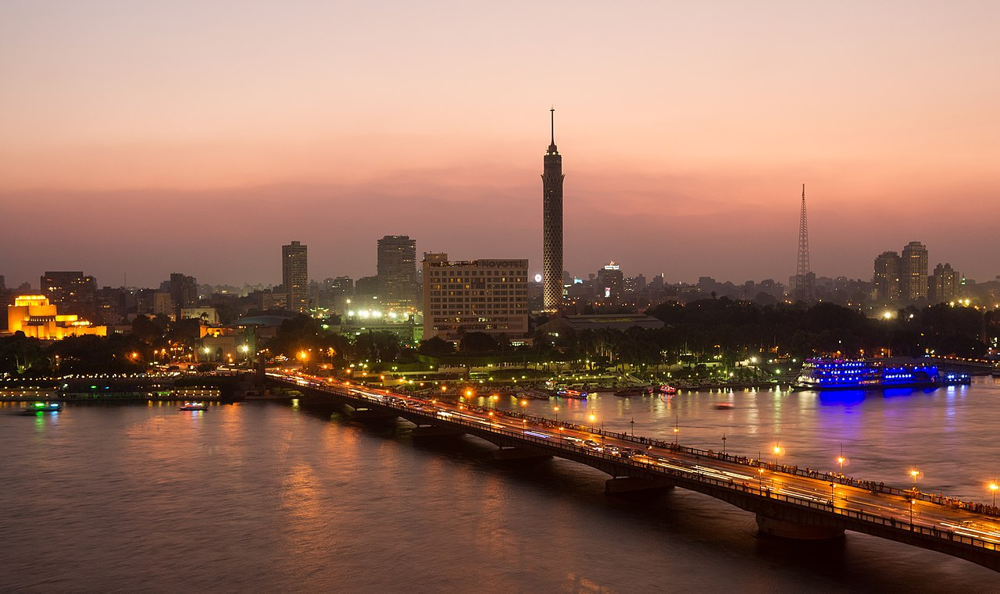
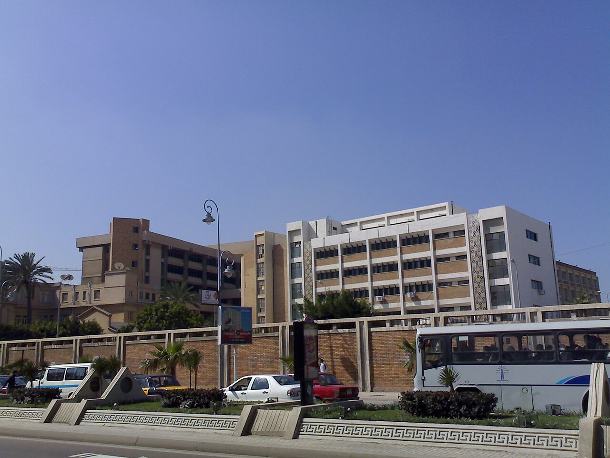
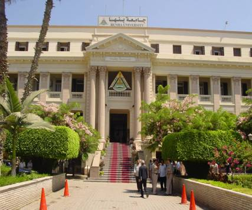
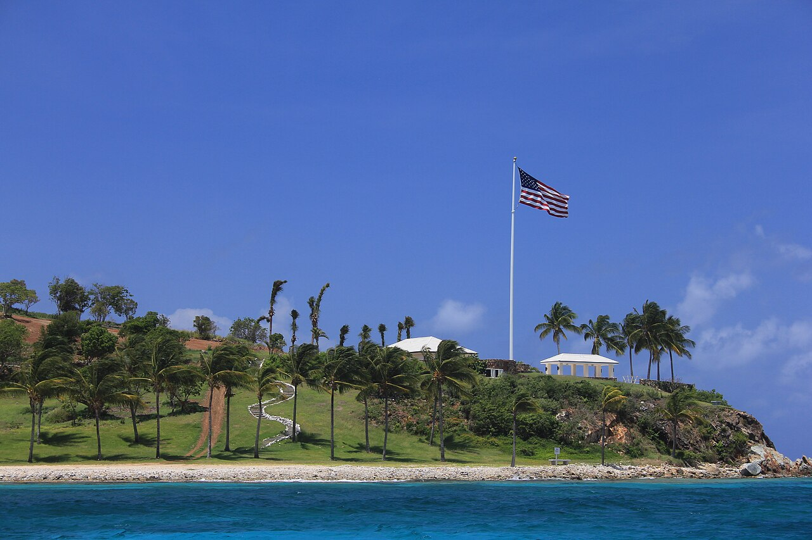

Background
Saeloon is an informal online community that began in 2020 as a private Facebook Messenger group. Although not a real country, Saeloon adopted symbols, nicknames, and a flag to create a shared identity among members. This page archives the group's history, media, and selected conversations.
Saeloon was founded in 2020 by Mohamed Khaled and a small circle of friends. It started as a place for memes, everyday chat, and shared culture. In 2021 the founder designed a simple black-and-white skull flag to give the group a consistent identity.
Incidents
Ahmalid incident: brief summary and outcome.
Mazen security incident: brief summary and outcome.
Gallery








References & notes
Content is archived from private chats and participant recollections. This site is an independent archive and not a news organization.